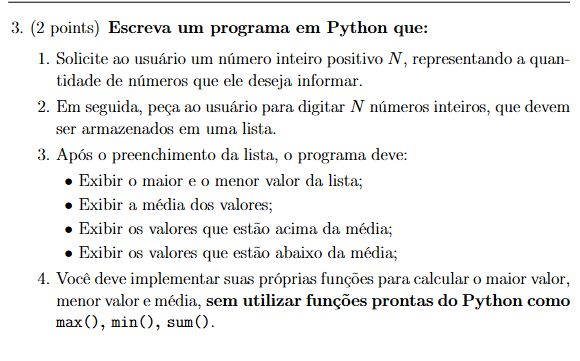
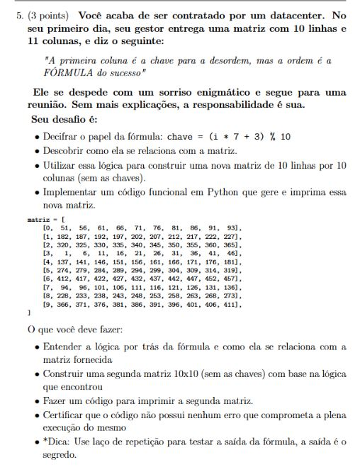

A prova 2 cobrou, além do que já foi passado anteriormente, vetores, matrizes e for loops. Assim, a prova 2 foi visivelmente mais complexa do que a prova 1, fazendo com que eu errasse a questão de número 5, a qual trazia um enigma para o estudante decifrar, infelizmente não cheguei a resposta e conquistei apenas 2,1 pontos de 3,0 pontos possíveis.
